Usar la gramática de gráficos (grammar of graphics) con ggplot2
Crear y personalizar múltiples tipos de gráficos
Identificar visualizaciones problemáticas y mejorarlas
Combinar múltiples gráficos en una figura
Exportar gráficos para publicación
6.1 Principios y gramática de gráficos
Tufte (1983) estableció principios fundamentales de diseño gráfico que permanecen vigentes:
6.1.1 1. Maximizar el ratio datos-tinta
Eliminar elementos innecesarios. Cada elemento gráfico debe comunicar información.
Mal ejemplo (chartjunk):
# Gráfico sobrecargadoggplot(comunas %>%slice(1:10), aes(x =reorder(region, -izquierda_2021), y = izquierda_2021)) +geom_bar(stat ="identity", fill ="red", color ="gold", linewidth =2) +geom_text(aes(label =round(izquierda_2021, 0)), vjust =-0.5, size =6, color ="blue") +labs(title ="!!!VOTO DE IZQUIERDA POR REGIÓN!!!", x ="REGIÓN", y ="PORCENTAJE (%)") +theme_dark() +theme(plot.background =element_rect(fill ="yellow"),panel.grid.major =element_line(color ="purple", linewidth =2),axis.text =element_text(size =14, face ="bold", color ="red") )
Gráfico con elementos innecesarios
Buen ejemplo (limpio):
comunas %>%group_by(region) %>%summarise(izquierda_media =mean(izquierda_2021)) %>%ggplot(aes(x =reorder(region, izquierda_media), y = izquierda_media)) +geom_col(fill ="steelblue", width =0.7) +coord_flip() +labs(x =NULL, y ="Voto izquierda (%)", title ="Promedio de voto izquierda por región, 2021") +theme_minimal()
Gráfico limpio y efectivo
6.1.2 2. Usar el canal visual apropiado
La percepción humana procesa algunos atributos visuales mejor que otros:
Precisión
Canal visual
Ejemplo
1 (mejor)
Posición en eje común
Barras, scatter
2
Longitud
Barras
3
Ángulo/pendiente
Líneas
4
Área
Burbujas
5
Volumen
3D (evitar)
6-7 (peor)
Color
Mapas de calor
Esto explica por qué gráficos de barras son más precisos que gráficos de torta.
datos_partidos <-data.frame(partido =c("PS", "DC", "RN", "UDI", "Otros"),votos =c(23, 18, 22, 19, 18))p1 <-ggplot(datos_partidos, aes(x =reorder(partido, votos), y = votos)) +geom_col(fill ="steelblue") +coord_flip() +labs(x =NULL, y ="Votos (%)", title ="Gráfico de barras") +theme_minimal()p2 <-ggplot(datos_partidos, aes(x ="", y = votos, fill = partido)) +geom_bar(stat ="identity", width =1) +coord_polar("y") +labs(title ="Gráfico de torta") +theme_void() +theme(legend.position ="right")p1 | p2
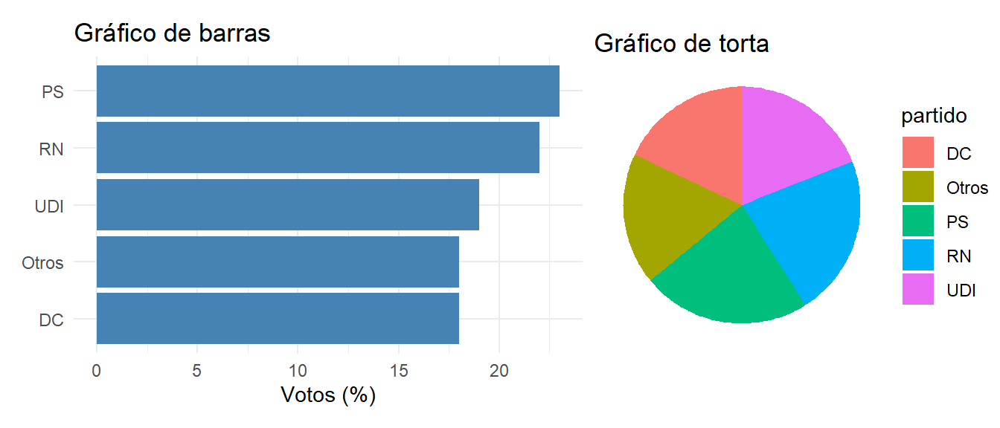
Comparación: barras vs. torta
El gráfico de barras permite comparaciones precisas. El gráfico de torta dificulta distinguir diferencias pequeñas.
6.1.3 3. Mostrar comparaciones
Los datos adquieren significado mediante comparación. Comparar contra: - Otros grupos - Otros momentos - Un estándar o objetivo
comunas_muestra <- comunas %>%slice_sample(n =20)ggplot(comunas_muestra, aes(x = izquierda_2017, xend = izquierda_2021, y =reorder(comuna_id, izquierda_2021))) +geom_segment(aes(yend = comuna_id), color ="gray70", linewidth =1) +geom_point(aes(x = izquierda_2017, color ="2017"), size =3) +geom_point(aes(x = izquierda_2021, color ="2021"), size =3) +scale_color_manual(values =c("2017"="coral", "2021"="steelblue")) +labs(x ="Voto izquierda (%)", y ="Comuna (ID)",title ="Cambio en voto de izquierda entre elecciones",color ="Año") +theme_minimal()
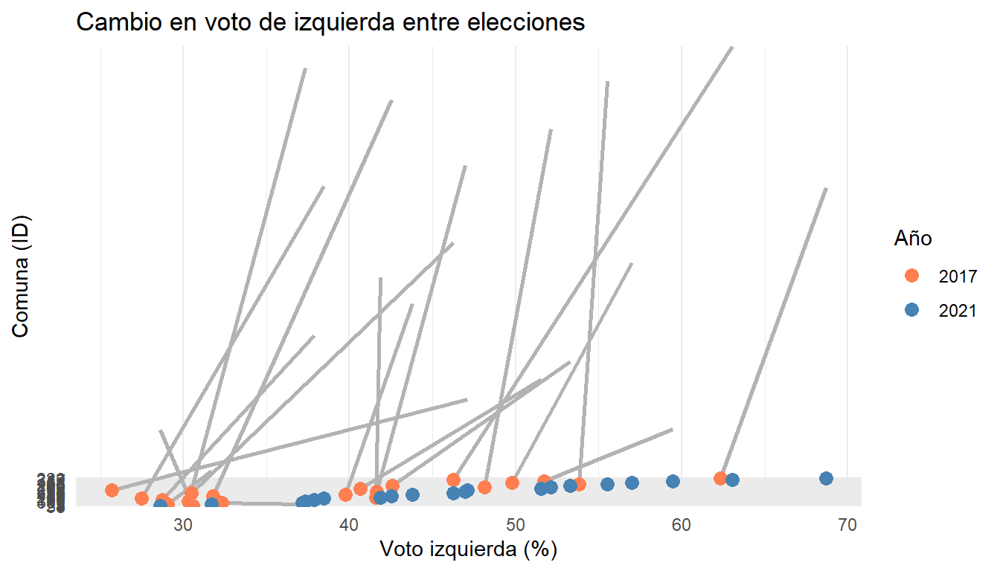
Comparación de cambio electoral 2017-2021
6.1.4 4. Mostrar causalidad y explicación
Los gráficos deben sugerir explicaciones, no solo describir.
ggplot(comunas, aes(x = urbano, y = cambio_izquierda, fill = urbano)) +geom_violin(alpha =0.7, show.legend =FALSE) +geom_boxplot(width =0.2, fill ="white", alpha =0.8, show.legend =FALSE) +scale_x_discrete(labels =c("FALSE"="Rural", "TRUE"="Urbana")) +labs(x ="Tipo de comuna", y ="Cambio en voto izquierda (puntos porcentuales)",title ="Cambio electoral según urbanización",subtitle ="Las comunas urbanas experimentaron mayor crecimiento del voto de izquierda") +theme_minimal()
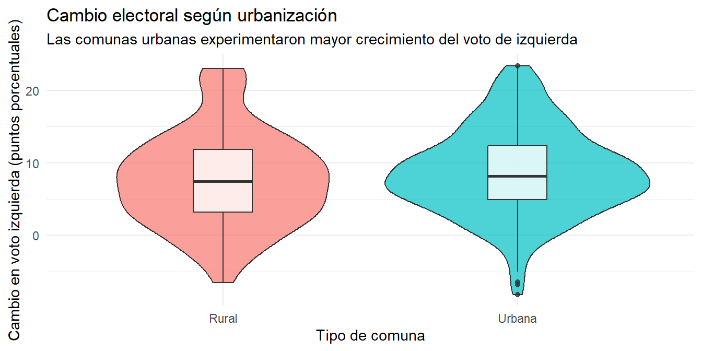
Relación entre urbanización y cambio electoral
6.1.5 5. Integrar evidencia
Combinar palabras, números y gráficos para una narrativa coherente.
6.1.6 Grammar of Graphics y ggplot2
Wilkinson (2005) propuso que los gráficos estadísticos tienen una gramática—componentes sistemáticos que se combinan para producir visualizaciones.
# Paso 1: Solo datos y aesthetics (nada se dibuja)p1 <-ggplot(comunas, aes(x = izquierda_2017, y = izquierda_2021))# Paso 2: Agregar geometríap2 <- p1 +geom_point(alpha =0.5)# Paso 3: Agregar línea de referenciap3 <- p2 +geom_abline(slope =1, intercept =0, linetype ="dashed", color ="red")# Paso 4: Mejorar etiquetasp4 <- p3 +labs(x ="Voto izquierda 2017 (%)", y ="Voto izquierda 2021 (%)",title ="Cambio electoral entre elecciones")# Combinar para mostrar progresión(p1 +ggtitle("Paso 1: Solo aesthetics")) / (p2 +ggtitle("Paso 2: + geometría")) / (p3 +ggtitle("Paso 3: + línea de referencia")) / (p4 +ggtitle("Paso 4: + etiquetas"))
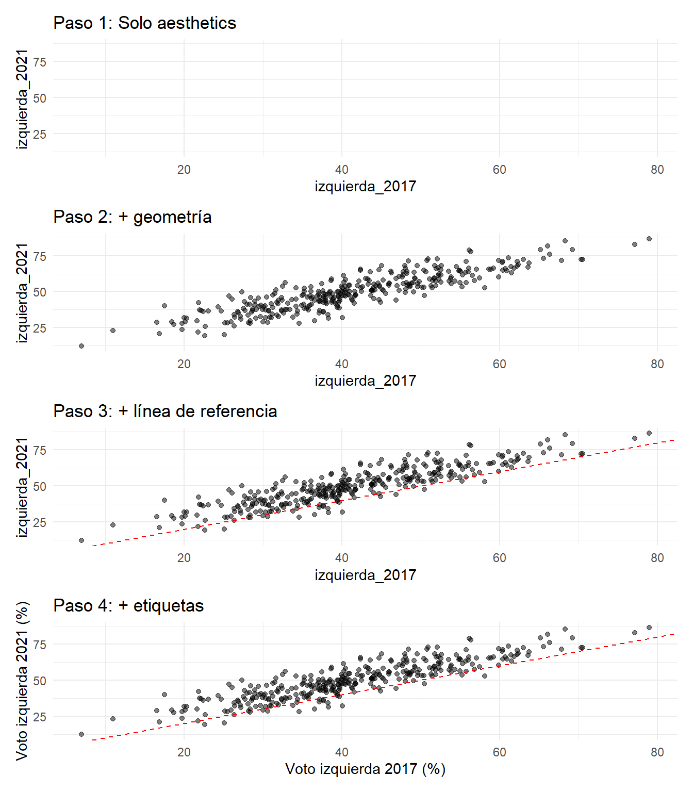
Construcción progresiva de un gráfico
6.2 Tipos de gráficos
6.2.1 Variables continuas
Histograma con densidad superpuesta:
ggplot(comunas, aes(x = cambio_izquierda)) +geom_histogram(aes(y =after_stat(density)), bins =30, fill ="lightblue", color ="white") +geom_density(color ="darkblue", linewidth =1) +geom_vline(xintercept =0, linetype ="dashed", color ="red", linewidth =1) +labs(x ="Cambio en voto izquierda (puntos porcentuales)",y ="Densidad",title ="Distribución del cambio electoral 2017-2021",subtitle ="La mayoría de comunas experimentó crecimiento del voto de izquierda") +theme_minimal()
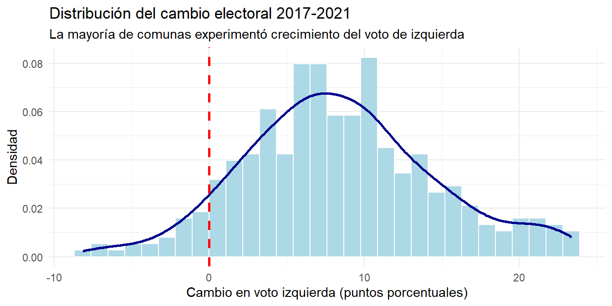
Distribución del cambio electoral
Ridgeline plot (montañas):
library(ggridges)ggplot(comunas, aes(x = cambio_izquierda, y = region, fill = region)) +geom_density_ridges(alpha =0.7, show.legend =FALSE) +labs(x ="Cambio en voto izquierda (puntos porcentuales)",y =NULL,title ="Cambio electoral por región") +theme_minimal()
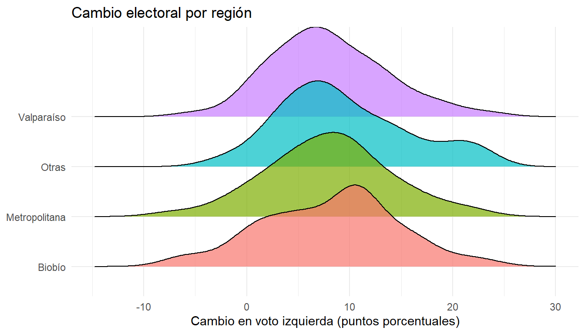
Distribuciones por región
6.2.2 Variables categóricas
Gráfico de barras ordenado:
comunas %>%count(region) %>%ggplot(aes(x =reorder(region, n), y = n)) +geom_col(fill ="steelblue") +geom_text(aes(label = n), hjust =-0.2, size =3.5) +coord_flip() +labs(x =NULL, y ="Número de comunas",title ="Comunas por región en la muestra") +theme_minimal()
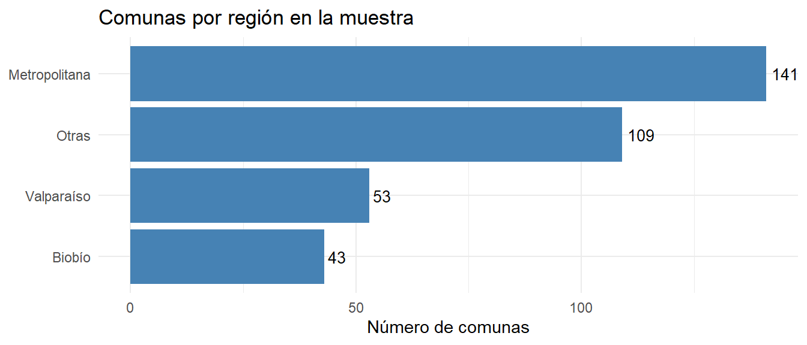
Frecuencias ordenadas
Dot plot (preferible cuando muchas categorías):
comunas %>%count(region) %>%ggplot(aes(x = n, y =reorder(region, n))) +geom_point(size =4, color ="steelblue") +geom_segment(aes(x =0, xend = n, yend = region), color ="gray70") +labs(x ="Número de comunas", y =NULL,title ="Comunas por región") +theme_minimal()
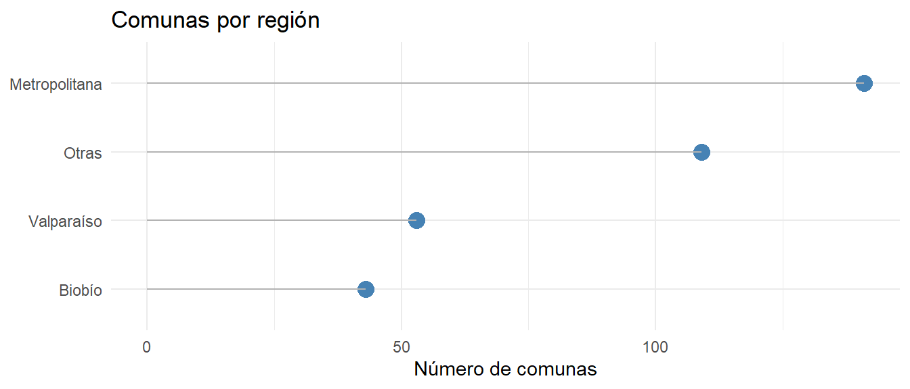
Dot plot como alternativa
6.2.3 Gráficos bivariados
6.2.4 Dos variables continuas: scatter plots
Básico con línea de tendencia:
ggplot(comunas, aes(x = izquierda_2017, y = izquierda_2021)) +geom_point(alpha =0.4) +geom_smooth(method ="lm", se =TRUE, color ="red") +geom_abline(slope =1, intercept =0, linetype ="dashed", color ="blue") +labs(x ="Voto izquierda 2017 (%)", y ="Voto izquierda 2021 (%)",title ="Relación entre apoyo de izquierda en dos elecciones",subtitle ="Línea roja: regresión | Línea azul: sin cambio") +theme_minimal()
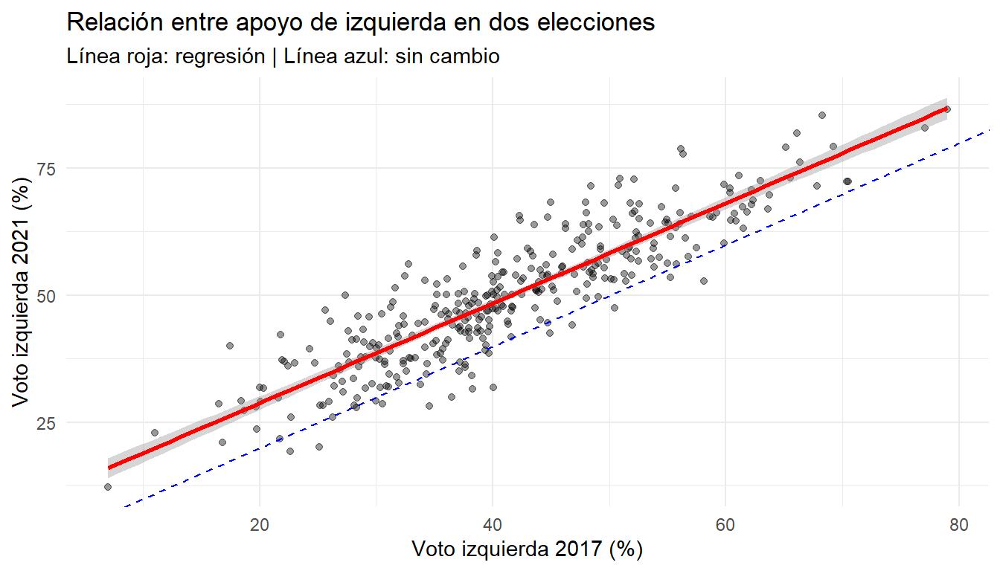
Relación entre voto 2017 y 2021
Con tercera variable (color/tamaño):
ggplot(comunas, aes(x = izquierda_2017, y = izquierda_2021)) +geom_point(aes(color = region, size = poblacion), alpha =0.6) +scale_size_continuous(labels = comma, range =c(1, 8)) +labs(x ="Voto izquierda 2017 (%)", y ="Voto izquierda 2021 (%)",size ="Población", color ="Región",title ="Cambio electoral según región y tamaño") +theme_minimal()
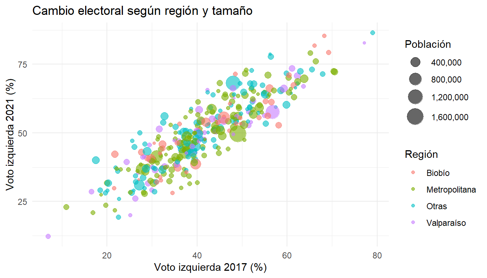
Scatter plot con tercera variable
Etiquetado selectivo con ggrepel:
# Identificar casos extremos para etiquetarextremos <- comunas %>%filter(abs(cambio_izquierda) >15) %>%mutate(label =paste0("Comuna ", comuna_id))ggplot(comunas, aes(x = izquierda_2017, y = cambio_izquierda)) +geom_point(alpha =0.3) +geom_point(data = extremos, color ="red", size =3) +geom_text_repel(data = extremos, aes(label = label), size =3, max.overlaps =15) +geom_hline(yintercept =0, linetype ="dashed", color ="blue") +labs(x ="Voto izquierda 2017 (%)",y ="Cambio 2017-2021 (puntos porcentuales)",title ="Cambio electoral desde baseline 2017",subtitle ="Comunas con cambios extremos etiquetadas en rojo") +theme_minimal()
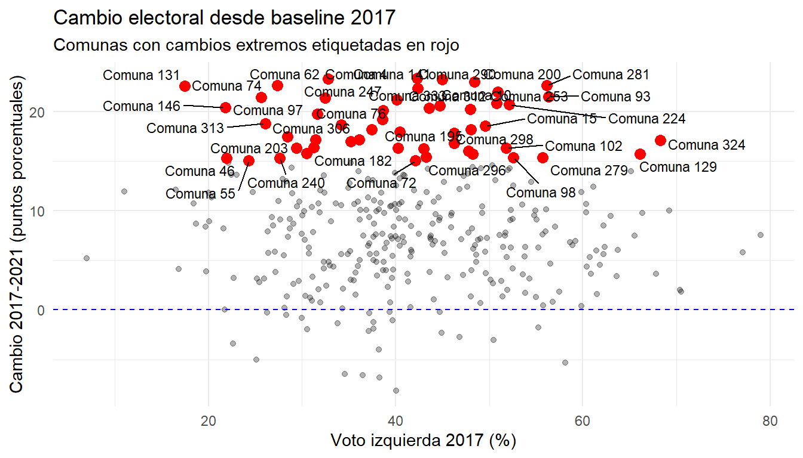
Scatter plot con etiquetas
6.2.5 Variable continua vs. categórica
Boxplots comparativos:
ggplot(comunas, aes(x = region, y = cambio_izquierda, fill = region)) +geom_boxplot(alpha =0.7, show.legend =FALSE) +geom_hline(yintercept =0, linetype ="dashed", color ="red") +labs(x =NULL, y ="Cambio en voto izquierda (puntos porcentuales)",title ="Cambio electoral por región") +theme_minimal() +theme(axis.text.x =element_text(angle =45, hjust =1))
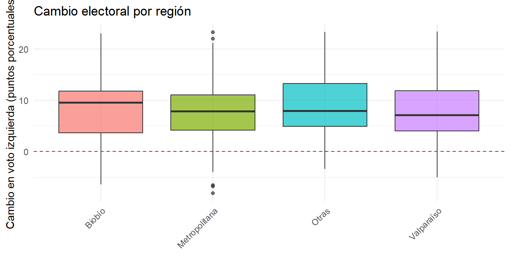
Distribuciones por grupo
Violin plots con puntos:
ggplot(comunas, aes(x = region, y = cambio_izquierda, fill = region)) +geom_violin(alpha =0.5, show.legend =FALSE) +geom_jitter(width =0.2, alpha =0.2, size =0.8, show.legend =FALSE) +stat_summary(fun = median, geom ="point", size =3, color ="red") +geom_hline(yintercept =0, linetype ="dashed", color ="blue") +labs(x =NULL, y ="Cambio en voto izquierda (p.p.)",title ="Distribución del cambio electoral por región",subtitle ="Punto rojo: mediana") +theme_minimal() +theme(axis.text.x =element_text(angle =45, hjust =1))
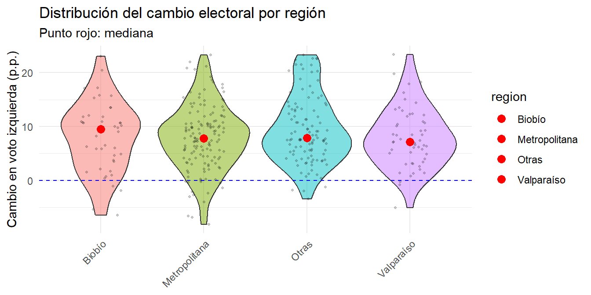
Violin plot con datos individuales
6.2.6 Dos variables categóricas
Heatmap de tabla de contingencia:
# Crear categoríascomunas_cat <- comunas %>%mutate(cambio_cat =cut(cambio_izquierda, breaks =c(-Inf, -5, 5, Inf),labels =c("Bajó", "Estable", "Subió")),urbano_lab =ifelse(urbano, "Urbana", "Rural") )tabla_cont <-table(comunas_cat$urbano_lab, comunas_cat$cambio_cat)# Convertir a data frame para ggplottabla_df <-as.data.frame(tabla_cont)names(tabla_df) <-c("Urbano", "Cambio", "Freq")ggplot(tabla_df, aes(x = Cambio, y = Urbano, fill = Freq)) +geom_tile(color ="white") +geom_text(aes(label = Freq), color ="white", size =5) +scale_fill_gradient(low ="lightblue", high ="darkblue") +labs(x ="Cambio electoral", y ="Tipo de comuna",fill ="Frecuencia",title ="Cambio electoral según urbanización") +theme_minimal()